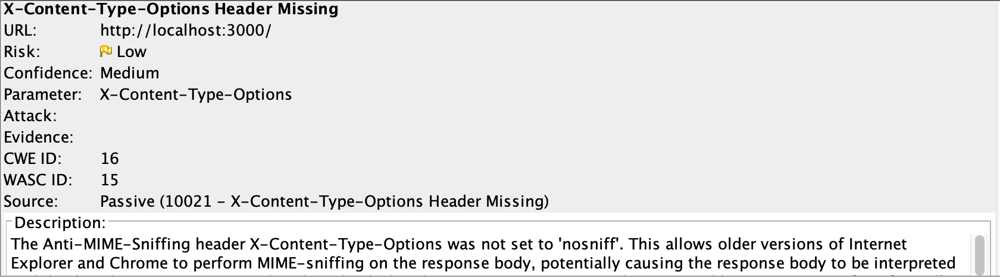

Assignment 4: Security and Privacy Assessment of Private Car Service
Introduction
The product I will be analyzing is Ming Chow’s version of Assignment 3, server.js. I will be trying to scrutinize any security concerns within the code, including syntax, methods, coding practice etc.
Methodology
I used the OWASP Zed Attack Proxy to find vulnerabilities in server.js.
Abstract of Findings
Although there were very few vulnerabilities on the code methodology side of server.js, OWASP helped expose advanced security vulnerabilities that could be manipulated from the client side (hackers), using the vulnerabilities to their advantage. Because server.js handles and takes in user input, any weakness in that field could cause malicious content to get through.
Issues Found
Issue #1: X-Frame-Options Header Not Set
- location
In the HTTP Response for GET: http://localhost:3000/
- severity
Medium
- Description
X-Frame-Options header is not included in the HTTP response to protect against 'ClickJacking' attacks.
- Proof Vulnerability
- Resolution
Ensure it's set on all web pages returned by your site (if you expect the page to be framed only by pages on your server (e.g. it's part of a FRAMESET) then you'll want to use SAMEORIGIN, otherwise if you never expect the page to be framed, you should use DENY. ALLOW-FROM allows specific websites to frame the web page in supported web browsers) (OWASP).
Issue #2: Web Browser XSS Protection Not Enabled
- location
In the HTTP Response for GET: http://localhost:3000/, http://localhost:3000/robots.txt, and http://localhost:3000/sitemap.xml
- severity
Low
- Description
Web Browser XSS Protection is not enabled, or is disabled by the configuration of the 'X-XSS-Protection' HTTP response header on the web server
- Proof Vulnerability
[Malicious script passed via POST request in the username field]

- Resolution
Ensure that the web browser's XSS filter is enabled, by setting the X-XSS-Protection HTTP response header to '1'(OWASP).
Issue #3: X-Content-Type-Options Header Missing
- location
In the HTTP Response for GET: http://localhost:3000/
- severity
Low
- Description
The Anti-MIME-Sniffing header X-Content-Type-Options was not set to 'nosniff'. This allows older versions of Internet Explorer and Chrome to perform MIME-sniffing on the response body, potentially causing the response body to be interpreted and displayed as a content type other than the declared content type. Current (early 2014) and legacy versions of Firefox will use the declared content type (if one is set), rather than performing MIME-sniffing.

- Proof Vulnerability
It was very difficult to try an attack this specific vulnerability because I was not familiar with the concept.
- Resolution
Ensure that the application/web server sets the Content-Type header appropriately, and that it sets the X-Content-Type-Options header to 'nosniff' for all web pages.If possible, ensure that the end user uses a standards-compliant and modern web browser that does not perform MIME-sniffing at all, or that can be directed by the web application/web server to not perform MIME-sniffing.(OWASP).
Conclusion
The server.js, although displayed good coding practice, still showed various complex vulnerabilities after getting tested by the OWASP Zed Attack Proxy software. Because the server side has POST api which takes in various forms of user input, a weak security protocol to filter and validate user input can lead to malicious attacks getting through. One of the main major security flaws in server.js was Cross Site Scripting and Clickjacking, which would be possible through bad POST user input security filter.
References
- https://www.owasp.org/index.php/Testing_for_Clickjacking_(OTG-CLIENT-009)
- https://www.owasp.org/index.php/Cross-site_Scripting_(XSS)
- Ming Chow’s server.js